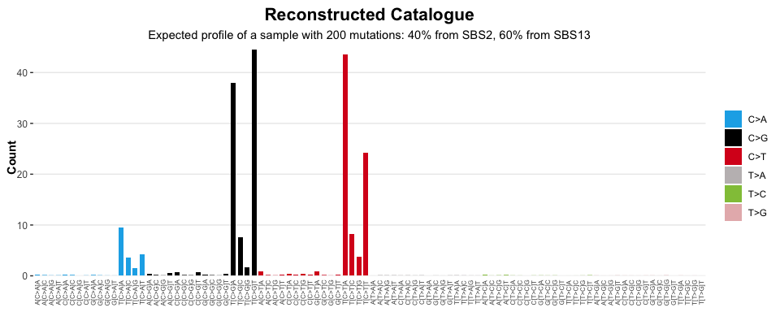
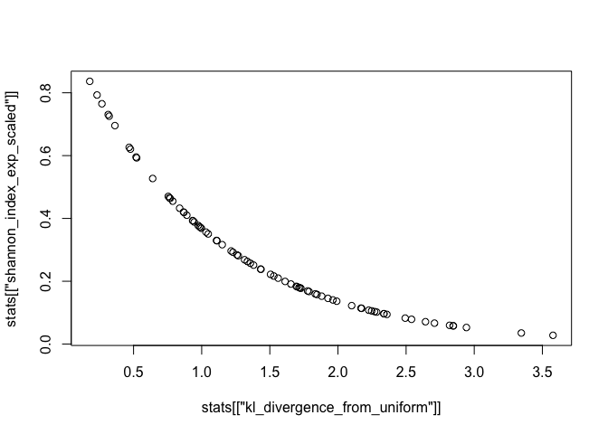

sigstats enables common mathematical operations / transformations to be applied to sigverse style signatures / catalogues
Installation
You can install the development version of sigstats like so:
if (!require("pak", quietly = TRUE))
install.packages("pak")
pak::pak("selkamand/sigstats")Quick Start
library(sigstats)
library(sigstash)
library(sigvis)
# Load a signature collection
signatures <- sig_load("COSMIC_v3.3.1_SBS_GRCh38")
# Create a model that represents a mix of SBS2 (40%) and SBS13 (60%)
model <- c(SBS2 = 0.4, SBS13 = 0.6)
# Add selected signatures to the combined model
combined_signatures <- sig_combine(signatures, model)
# Visualise result
sig_visualise(
combined_signatures,
title = "Model",
subtitle = "Created by combining SBS2 (40%) and SBS13 (60%)"
)
#> ✔ All channels matched perfectly to set [sbs_96]. Using this set for sort order
#> ✔ All types matched perfectly to set [sbs_type]. Using this set for sort order
#> ✔ Types matched perfectly to palette [snv_type]
Signature Operations
sigstats helps you add and subtract catalogues/signatures
# Load a signature collection
signatures <- sig_load("COSMIC_v3.3.1_SBS_GRCh38")
# Reconstruct catalogues for two pure samples (each with 100 mutations)
catalogue1 <- sig_reconstruct(signatures[['SBS3']], n = 100)
catalogue2 <- sig_reconstruct(signatures[['SBS4']], n = 100)
catalogue3 <- sig_reconstruct(signatures[['SBS5']], n = 100)
# Subtract catalogue2 from catalogue1
difference <- catalogue1 %-% catalogue2
# Inspect result
head(difference)
#> type channel fraction count
#> 193 C>A A[C>A]A 0.022382961 -2.1530987
#> 194 C>A A[C>A]C 0.017305082 -1.6646390
#> 195 C>A A[C>A]G 0.014874591 -1.4308412
#> 196 C>A A[C>A]T 0.018086125 -1.7397704
#> 197 C>G A[C>G]A 0.013392234 1.2882479
#> 198 C>G A[C>G]C 0.009122518 0.8775283
# Sum three catalogues
catalogue1 %+% catalogue2 %+% catalogue3
#> type channel fraction count
#> 193 C>A A[C>A]A 0.025140845 7.5422534
#> 194 C>A A[C>A]C 0.019556620 5.8669861
#> 195 C>A A[C>A]G 0.006610550 1.9831650
#> 196 C>A A[C>A]T 0.016187902 4.8563707
#> 197 C>G A[C>G]A 0.012296054 3.6888161
#> 198 C>G A[C>G]C 0.006680065 2.0040195
#> 199 C>G A[C>G]G 0.001119236 0.3357709
#> 200 C>G A[C>G]T 0.010400639 3.1201918
#> 201 C>T A[C>T]A 0.018591614 5.5774841
#> 202 C>T A[C>T]C 0.011376016 3.4128049
#> 203 C>T A[C>T]G 0.003279210 0.9837630
#> 204 C>T A[C>T]T 0.012841364 3.8524091
#> 205 T>A A[T>A]A 0.007402060 2.2206179
#> 206 T>A A[T>A]C 0.005911249 1.7733748
#> 207 T>A A[T>A]G 0.010351356 3.1054067
#> 208 T>A A[T>A]T 0.005490303 1.6470908
#> 209 T>C A[T>C]A 0.023449410 7.0348230
#> 210 T>C A[T>C]C 0.007315471 2.1946412
#> 211 T>C A[T>C]G 0.018425765 5.5277296
#> 212 T>C A[T>C]T 0.018988012 5.6964035
#> 213 T>G A[T>G]A 0.002941629 0.8824886
#> 214 T>G A[T>G]C 0.001792487 0.5377460
#> 215 T>G A[T>G]G 0.005200386 1.5601158
#> 216 T>G A[T>G]T 0.002995597 0.8986790
#> 217 C>A C[C>A]A 0.036674366 11.0023099
#> 218 C>A C[C>A]C 0.036596975 10.9790925
#> 219 C>A C[C>A]G 0.010193282 3.0579845
#> 220 C>A C[C>A]T 0.030131351 9.0394053
#> 221 C>G C[C>G]A 0.011297774 3.3893323
#> 222 C>G C[C>G]C 0.009887456 2.9662367
#> 223 C>G C[C>G]G 0.002471278 0.7413834
#> 224 C>G C[C>G]T 0.012808497 3.8425491
#> 225 C>T C[C>T]A 0.015969598 4.7908794
#> 226 C>T C[C>T]C 0.016685828 5.0057485
#> 227 C>T C[C>T]G 0.007703069 2.3109208
#> 228 C>T C[C>T]T 0.020576421 6.1729262
#> 229 T>A C[T>A]A 0.008624313 2.5872938
#> 230 T>A C[T>A]C 0.011761654 3.5284962
#> 231 T>A C[T>A]G 0.016900186 5.0700558
#> 232 T>A C[T>A]T 0.009659740 2.8979221
#> 233 T>C C[T>C]A 0.009095737 2.7287211
#> 234 T>C C[T>C]C 0.009107742 2.7323227
#> 235 T>C C[T>C]G 0.012121890 3.6365670
#> 236 T>C C[T>C]T 0.011150273 3.3450820
#> 237 T>G C[T>G]A 0.002608360 0.7825080
#> 238 T>G C[T>G]C 0.004039645 1.2118936
#> 239 T>G C[T>G]G 0.006869552 2.0608655
#> 240 T>G C[T>G]T 0.005206204 1.5618613
#> 241 C>A G[C>A]A 0.016338672 4.9016016
#> 242 C>A G[C>A]C 0.017571383 5.2714149
#> 243 C>A G[C>A]G 0.006419293 1.9257880
#> 244 C>A G[C>A]T 0.012631887 3.7895661
#> 245 C>G G[C>G]A 0.007569400 2.2708199
#> 246 C>G G[C>G]C 0.006407871 1.9223614
#> 247 C>G G[C>G]G 0.002433293 0.7299880
#> 248 C>G G[C>G]T 0.008124929 2.4374787
#> 249 C>T G[C>T]A 0.013313488 3.9940464
#> 250 C>T G[C>T]C 0.012987867 3.8963602
#> 251 C>T G[C>T]G 0.004474679 1.3424036
#> 252 C>T G[C>T]T 0.011193117 3.3579350
#> 253 T>A G[T>A]A 0.006609142 1.9827425
#> 254 T>A G[T>A]C 0.004644861 1.3934582
#> 255 T>A G[T>A]G 0.009645684 2.8937051
#> 256 T>A G[T>A]T 0.007112597 2.1337790
#> 257 T>C G[T>C]A 0.008933222 2.6799666
#> 258 T>C G[T>C]C 0.004898068 1.4694205
#> 259 T>C G[T>C]G 0.009459062 2.8377186
#> 260 T>C G[T>C]T 0.008329559 2.4988678
#> 261 T>G G[T>G]A 0.002496523 0.7489569
#> 262 T>G G[T>G]C 0.001428218 0.4284653
#> 263 T>G G[T>G]G 0.006235766 1.8707298
#> 264 T>G G[T>G]T 0.002849820 0.8549461
#> 265 C>A T[C>A]A 0.018798045 5.6394135
#> 266 C>A T[C>A]C 0.024386104 7.3158311
#> 267 C>A T[C>A]G 0.004973720 1.4921161
#> 268 C>A T[C>A]T 0.021536377 6.4609132
#> 269 C>G T[C>G]A 0.008274661 2.4823983
#> 270 C>G T[C>G]C 0.011325426 3.3976278
#> 271 C>G T[C>G]G 0.001381567 0.4144701
#> 272 C>G T[C>G]T 0.013254230 3.9762690
#> 273 C>T T[C>T]A 0.009982055 2.9946166
#> 274 C>T T[C>T]C 0.014477519 4.3432556
#> 275 C>T T[C>T]G 0.005838103 1.7514308
#> 276 C>T T[C>T]T 0.012243639 3.6730918
#> 277 T>A T[T>A]A 0.007142323 2.1426968
#> 278 T>A T[T>A]C 0.006436888 1.9310663
#> 279 T>A T[T>A]G 0.007066453 2.1199359
#> 280 T>A T[T>A]T 0.009156982 2.7470946
#> 281 T>C T[T>C]A 0.011716363 3.5149088
#> 282 T>C T[T>C]C 0.006519940 1.9559820
#> 283 T>C T[T>C]G 0.007173081 2.1519242
#> 284 T>C T[T>C]T 0.011048486 3.3145458
#> 285 T>G T[T>G]A 0.004227468 1.2682404
#> 286 T>G T[T>G]C 0.004418606 1.3255818
#> 287 T>G T[T>G]G 0.005811939 1.7435818
#> 288 T>G T[T>G]T 0.008216595 2.4649784
# Sum a catalogue collection
catalogues <- list(cat1 = catalogue1, cat2 = catalogue2, cat3 = catalogue3)
sig_sum(catalogues)
#> type channel fraction count
#> 193 C>A A[C>A]A 0.025140845 7.5422534
#> 194 C>A A[C>A]C 0.019556620 5.8669861
#> 195 C>A A[C>A]G 0.006610550 1.9831650
#> 196 C>A A[C>A]T 0.016187902 4.8563707
#> 197 C>G A[C>G]A 0.012296054 3.6888161
#> 198 C>G A[C>G]C 0.006680065 2.0040195
#> 199 C>G A[C>G]G 0.001119236 0.3357709
#> 200 C>G A[C>G]T 0.010400639 3.1201918
#> 201 C>T A[C>T]A 0.018591614 5.5774841
#> 202 C>T A[C>T]C 0.011376016 3.4128049
#> 203 C>T A[C>T]G 0.003279210 0.9837630
#> 204 C>T A[C>T]T 0.012841364 3.8524091
#> 205 T>A A[T>A]A 0.007402060 2.2206179
#> 206 T>A A[T>A]C 0.005911249 1.7733748
#> 207 T>A A[T>A]G 0.010351356 3.1054067
#> 208 T>A A[T>A]T 0.005490303 1.6470908
#> 209 T>C A[T>C]A 0.023449410 7.0348230
#> 210 T>C A[T>C]C 0.007315471 2.1946412
#> 211 T>C A[T>C]G 0.018425765 5.5277296
#> 212 T>C A[T>C]T 0.018988012 5.6964035
#> 213 T>G A[T>G]A 0.002941629 0.8824886
#> 214 T>G A[T>G]C 0.001792487 0.5377460
#> 215 T>G A[T>G]G 0.005200386 1.5601158
#> 216 T>G A[T>G]T 0.002995597 0.8986790
#> 217 C>A C[C>A]A 0.036674366 11.0023099
#> 218 C>A C[C>A]C 0.036596975 10.9790925
#> 219 C>A C[C>A]G 0.010193282 3.0579845
#> 220 C>A C[C>A]T 0.030131351 9.0394053
#> 221 C>G C[C>G]A 0.011297774 3.3893323
#> 222 C>G C[C>G]C 0.009887456 2.9662367
#> 223 C>G C[C>G]G 0.002471278 0.7413834
#> 224 C>G C[C>G]T 0.012808497 3.8425491
#> 225 C>T C[C>T]A 0.015969598 4.7908794
#> 226 C>T C[C>T]C 0.016685828 5.0057485
#> 227 C>T C[C>T]G 0.007703069 2.3109208
#> 228 C>T C[C>T]T 0.020576421 6.1729262
#> 229 T>A C[T>A]A 0.008624313 2.5872938
#> 230 T>A C[T>A]C 0.011761654 3.5284962
#> 231 T>A C[T>A]G 0.016900186 5.0700558
#> 232 T>A C[T>A]T 0.009659740 2.8979221
#> 233 T>C C[T>C]A 0.009095737 2.7287211
#> 234 T>C C[T>C]C 0.009107742 2.7323227
#> 235 T>C C[T>C]G 0.012121890 3.6365670
#> 236 T>C C[T>C]T 0.011150273 3.3450820
#> 237 T>G C[T>G]A 0.002608360 0.7825080
#> 238 T>G C[T>G]C 0.004039645 1.2118936
#> 239 T>G C[T>G]G 0.006869552 2.0608655
#> 240 T>G C[T>G]T 0.005206204 1.5618613
#> 241 C>A G[C>A]A 0.016338672 4.9016016
#> 242 C>A G[C>A]C 0.017571383 5.2714149
#> 243 C>A G[C>A]G 0.006419293 1.9257880
#> 244 C>A G[C>A]T 0.012631887 3.7895661
#> 245 C>G G[C>G]A 0.007569400 2.2708199
#> 246 C>G G[C>G]C 0.006407871 1.9223614
#> 247 C>G G[C>G]G 0.002433293 0.7299880
#> 248 C>G G[C>G]T 0.008124929 2.4374787
#> 249 C>T G[C>T]A 0.013313488 3.9940464
#> 250 C>T G[C>T]C 0.012987867 3.8963602
#> 251 C>T G[C>T]G 0.004474679 1.3424036
#> 252 C>T G[C>T]T 0.011193117 3.3579350
#> 253 T>A G[T>A]A 0.006609142 1.9827425
#> 254 T>A G[T>A]C 0.004644861 1.3934582
#> 255 T>A G[T>A]G 0.009645684 2.8937051
#> 256 T>A G[T>A]T 0.007112597 2.1337790
#> 257 T>C G[T>C]A 0.008933222 2.6799666
#> 258 T>C G[T>C]C 0.004898068 1.4694205
#> 259 T>C G[T>C]G 0.009459062 2.8377186
#> 260 T>C G[T>C]T 0.008329559 2.4988678
#> 261 T>G G[T>G]A 0.002496523 0.7489569
#> 262 T>G G[T>G]C 0.001428218 0.4284653
#> 263 T>G G[T>G]G 0.006235766 1.8707298
#> 264 T>G G[T>G]T 0.002849820 0.8549461
#> 265 C>A T[C>A]A 0.018798045 5.6394135
#> 266 C>A T[C>A]C 0.024386104 7.3158311
#> 267 C>A T[C>A]G 0.004973720 1.4921161
#> 268 C>A T[C>A]T 0.021536377 6.4609132
#> 269 C>G T[C>G]A 0.008274661 2.4823983
#> 270 C>G T[C>G]C 0.011325426 3.3976278
#> 271 C>G T[C>G]G 0.001381567 0.4144701
#> 272 C>G T[C>G]T 0.013254230 3.9762690
#> 273 C>T T[C>T]A 0.009982055 2.9946166
#> 274 C>T T[C>T]C 0.014477519 4.3432556
#> 275 C>T T[C>T]G 0.005838103 1.7514308
#> 276 C>T T[C>T]T 0.012243639 3.6730918
#> 277 T>A T[T>A]A 0.007142323 2.1426968
#> 278 T>A T[T>A]C 0.006436888 1.9310663
#> 279 T>A T[T>A]G 0.007066453 2.1199359
#> 280 T>A T[T>A]T 0.009156982 2.7470946
#> 281 T>C T[T>C]A 0.011716363 3.5149088
#> 282 T>C T[T>C]C 0.006519940 1.9559820
#> 283 T>C T[T>C]G 0.007173081 2.1519242
#> 284 T>C T[T>C]T 0.011048486 3.3145458
#> 285 T>G T[T>G]A 0.004227468 1.2682404
#> 286 T>G T[T>G]C 0.004418606 1.3255818
#> 287 T>G T[T>G]G 0.005811939 1.7435818
#> 288 T>G T[T>G]T 0.008216595 2.4649784Reconstruct a mutation catalogue from a signature model
We often need to reconstruct a catalogue (or tally) from our signature model.
# Load a signature collection
signatures <- sig_load("COSMIC_v3.3.1_SBS_GRCh38")
# Create a model that represents a mix of SBS2 (40%) and SBS13 (60%)
model <- c(SBS2 = 0.4, SBS13 = 0.6)
# Create a new signature by combining SBS2 and SBS13 in ratios dictated by the above model
signature <- sig_combine(signatures, model)
# Reconstruct a perfect catalogue describing what the mutational profile of a sample
# with 200 mutations and the given signature model would look like
reconstuction <- sig_reconstruct(signature, n=200)
# Visualise result
sig_visualise(
reconstuction,
class = "catalogue",
title = "Reconstructed Catalogue",
subtitle = "Expected profile of a sample with 200 mutations: 40% from SBS2, 60% from SBS13"
)
#> ✔ All channels matched perfectly to set [sbs_96]. Using this set for sort order
#> ✔ All types matched perfectly to set [sbs_type]. Using this set for sort order
#> ✔ Types matched perfectly to palette [snv_type]
Compute Stats on Signature Collections
# Load a signature collection
signatures <- sig_load("COSMIC_v3.3.1_SBS_GRCh38")
# Compute common statistics:
# e.g. Gini coefficient, Exponentiated Shannon Index, KL divergence, L1/L2/L3 Norms)
stats <- sig_collection_stats(signatures)
# Print Stats
head(stats)
#> id gini shannon_index shannon_index_exp kl_divergence_from_uniform
#> 1 SBS1 0.9480089 1.856082 6.398621 2.7082657
#> 2 SBS2 0.9798792 1.218777 3.383048 3.3455711
#> 3 SBS3 0.3268209 4.385754 80.298771 0.1785939
#> 4 SBS4 0.6456680 3.809528 45.129134 0.7548202
#> 5 SBS5 0.4063016 4.296474 73.440415 0.2678738
#> 6 SBS6 0.8851745 2.718273 15.154126 1.8460754
#> l3_norm l2_norm l1_norm l0_norm max_channel_fraction
#> 1 0.41142780 0.4844887 1 96 0.37062390
#> 2 0.56614330 0.6231289 1 96 0.53513019
#> 3 0.06042455 0.1174484 1 96 0.02499156
#> 4 0.12333330 0.1852696 1 96 0.08026888
#> 5 0.07475926 0.1306525 1 96 0.04597922
#> 6 0.23115412 0.3114406 1 96 0.17879063
#> shannon_index_exp_scaled l3_norm_scaled l2_norm_scaled l1_norm_scaled
#> 1 0.06665230 0.0042857062 0.005046757 0.01041667
#> 2 0.03524008 0.0058973261 0.006490926 0.01041667
#> 3 0.83644553 0.0006294224 0.001223421 0.01041667
#> 4 0.47009514 0.0012847218 0.001929892 0.01041667
#> 5 0.76500432 0.0007787423 0.001360964 0.01041667
#> 6 0.15785548 0.0024078554 0.003244173 0.01041667
#> l0_norm_scaled
#> 1 1
#> 2 1
#> 3 1
#> 4 1
#> 5 1
#> 6 1
# Plot kl_divergence_from_uniform against exponentiated shannon index
plot(
x = stats[["kl_divergence_from_uniform"]],
y = stats[["shannon_index_exp_scaled"]]
) ### Compute Similarity/Distance Measures
signatures <- sig_load("COSMIC_v3.3.1_SBS_GRCh38")
# Pairwise cosine similarity
sim_df <- sig_collection_pairwise_stats(
signatures,
metric = "cosine_similarity",
format = "data.frame"
)
head(sim_df)
#> S1 S2 cosine_similarity
#> 1 SBS1 SBS2 0.02031489
#> 2 SBS1 SBS3 0.05372626
#> 3 SBS1 SBS4 0.02361321
#> 4 SBS1 SBS5 0.19426687
#> 5 SBS1 SBS6 0.77021158
#> 6 SBS1 SBS7a 0.04804510
# L2 (Euclidean) distance matrix
dist_mat <- sig_collection_pairwise_stats(
signatures,
metric = "L2",
format = "matrix"
)Model Correctness
Quantify how well a fitted model matches ground truth signature weights.
signatures <- sig_load("COSMIC_v3.3.1_SBS_GRCh38")
cosmic_signatures <- names(signatures)
observed <- c(SBS1 = 0.7, SBS5 = 0.3, SBS18 = 0)
truth <- c(SBS1 = 0.6, SBS5 = 0.4, SBS18 = 0)
metrics <- sig_model_correctness(observed, truth, all_signatures = cosmic_signatures)
print(metrics)
#> $fitting_error
#> [1] 0.1
#>
#> $RMSE
#> [1] 0.01591115
#>
#> $n_false_positives
#> [1] 0
#>
#> $n_true_positives
#> [1] 2
#>
#> $n_false_negatives
#> [1] 0
#>
#> $n_true_negatives
#> [1] 77
#>
#> $total_false_positive_contributions
#> [1] 0
#>
#> $precision
#> [1] 1
#>
#> $recall
#> [1] 1
#>
#> $specificity
#> [1] 1
#>
#> $mathews_correlation_coeff
#> [1] 1
#>
#> $f1
#> [1] 1
#>
#> $balanced_accuracy
#> [1] 1